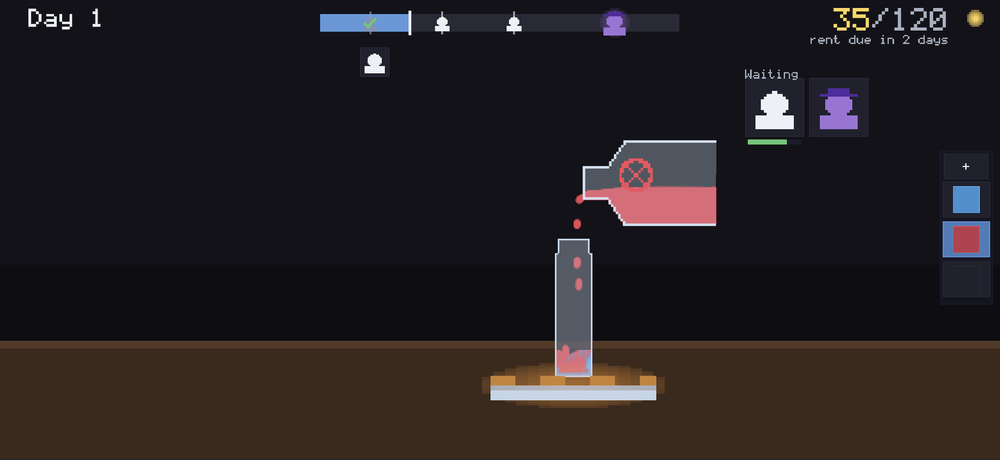
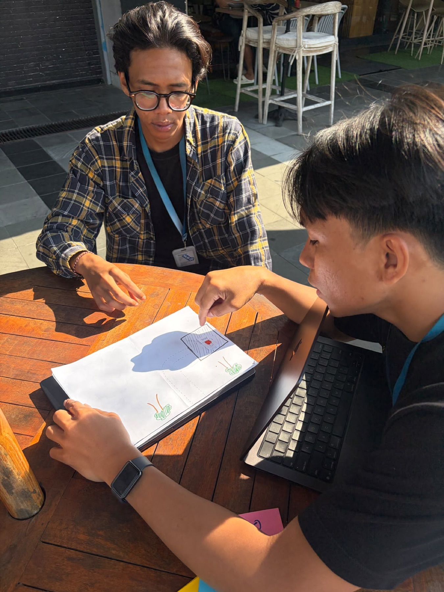
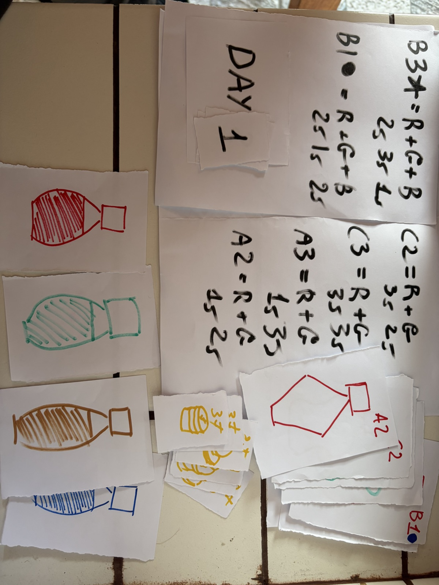
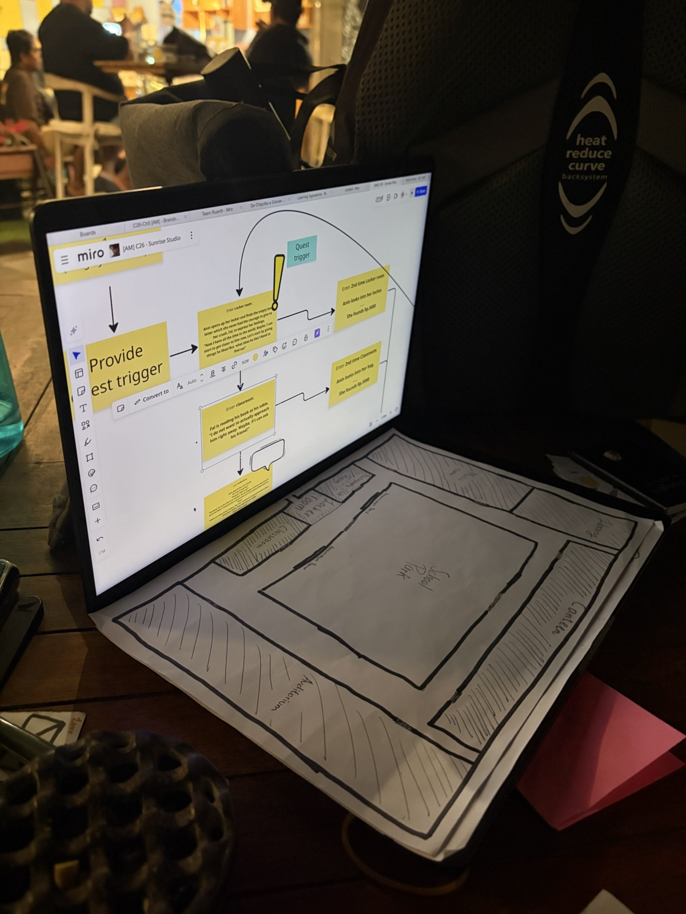
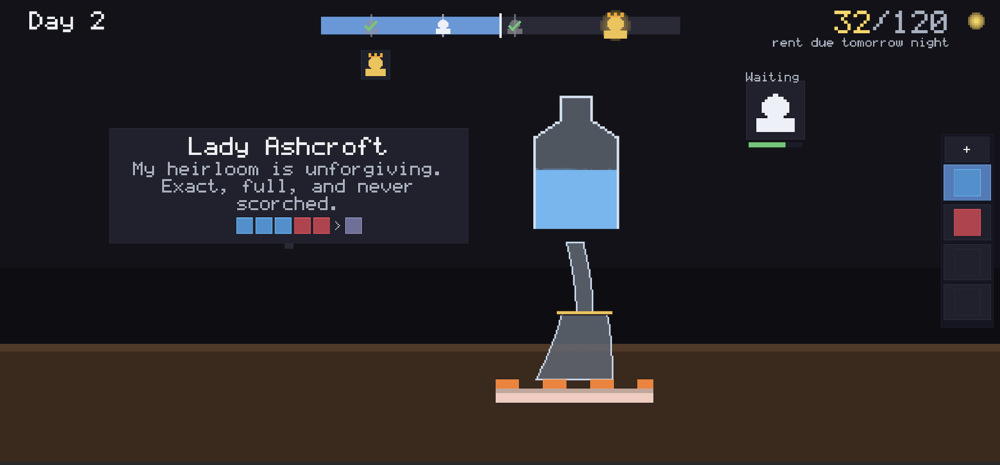
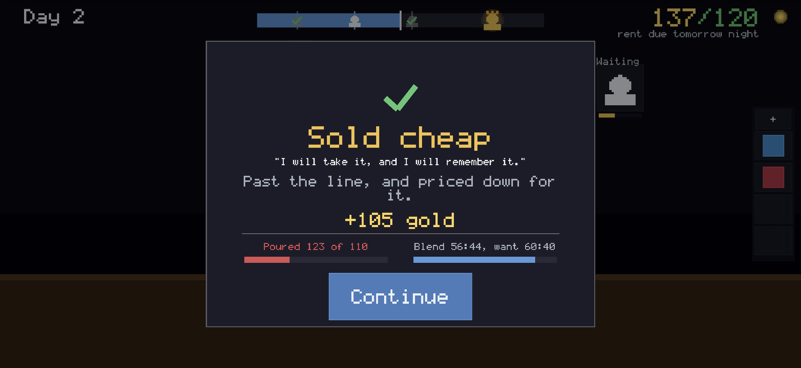
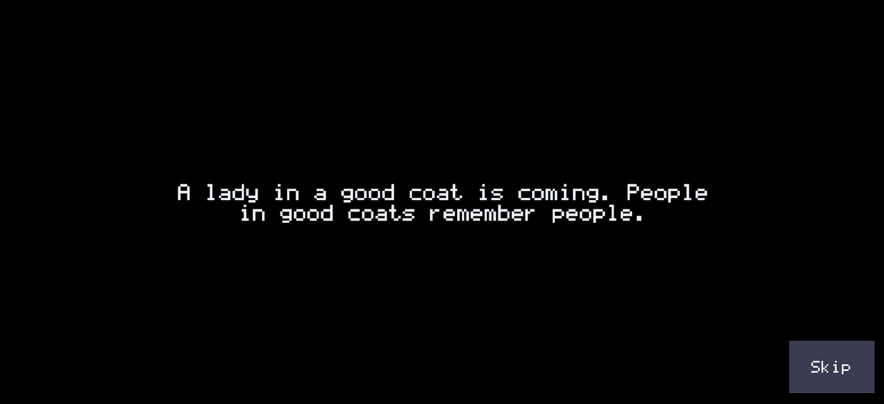

Alcherogue
An alchemy shop game where you pour by eye. Recipes list the ingredients but never the amounts, so the colour of the liquid is the only measure you get.
- Role
- Solo: design, code, illustration, 2.5D technical art
- Date
- Built with
- Unity 6, C#
- Testing
- 15-player paper playtest, Python scripts

My part
Everything. It’s a solo project, so I designed it, programmed it in Unity 6 and C#, drew the illustrations and built the 2.5D look. Owning all of it meant I could test a design question and carry the answer straight through code, art, UI and balance.
How it plays
You pour ingredients into a flask and judge the mix by its colour. The stream speeds up the longer you hold, so a big pour is harder to stop on time. Each potion lands somewhere on a quality ladder instead of simply passing or failing.
The same choice comes back in rent, stock, haggling and auctions: take the safe result now, or push for a better one. Haggling uses the same hold-and-release input as pouring, so there’s one thing to learn.
Two versions I threw away
The first version was a quiz roguelite. After nine iterations I could see the problem. Once a player knew an answer, that question was used up. More questions meant more content, but the game never got deeper.
The second version was a deduction game with scrambled jar labels. I wrote a short Python script to check it, and it showed that every four-jar setup could be solved in exactly two pours with one fixed strategy. Once you knew the trick there was nothing left to think about, so I cut that too.
Checking the numbers
Before building ideas into the game, I tested them with Python scripts, economy simulations, perception tests and quick browser prototypes.
- Economy simulations showed too much free stock, shortages players could see coming, and rent pressure that arrived too late.
- The precision recipes asked for varied 3.1× from one to another, while the colour change players could see varied 4.8×.
- One recipe shifted the hue by only 2.8°, which is too small to judge fairly from memory.
- In a browser prototype, accelerating flow felt clearly better than a constant stream.
Paper playtest with 15 players
I tested the core loop on paper first. Players picked a potion, poured it into a customer’s container, and timed the pour with a stopwatch, since paper has no liquid to look at. Most of them got really into the pouring itself.
Enjoyment was only the start. I wanted to know whether selling made money feel important, whether different container shapes made orders fair, what help players needed, and what would make them keep playing.
What I changed
The biggest finding was the containers. A different shape made the same pour feel easier or harder. That’s part of what makes the game interesting, but it can also make some orders feel unfair.
So I’m limiting the number of container shapes, adding a shop where players can refill supplies or buy measuring aids, and writing a stronger story so players have a reason to keep going.
Paper prototype



Screenshots


